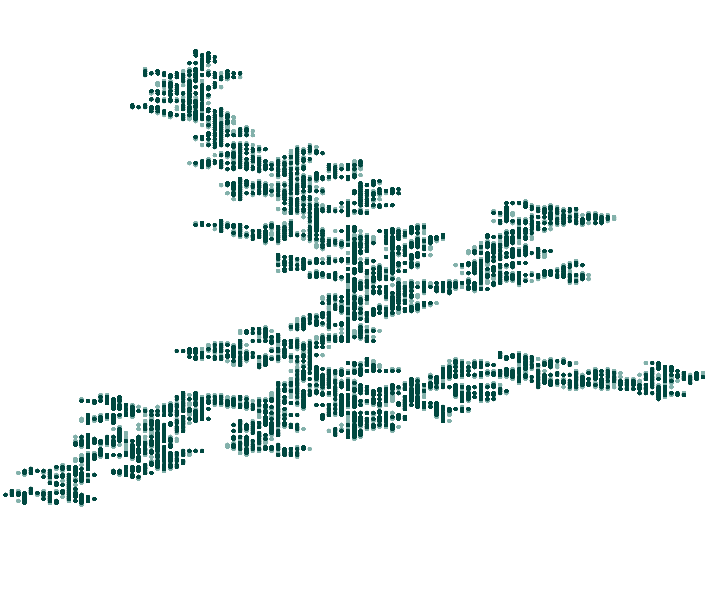

\label{section:conclusion} As explored in Section
\ref{section:physics}, the underlying physics for frost
formation was developed and understood. In Sections
\ref{section:algorithm} and \ref{section:vectorization}, the
two algorithms that were developed were explained and build
up from the ground. In Section \ref{section:results}, many
examples of the results for different values of
freezing and drying were provided;
ultimately, it appears that, in tweaking these two
parameters, we can replicate the physical result that was
shown in Figure \ref{fig:hauerSpreading}. For example, the
formation that is shown in Figure \ref{fig:hauerSpreading}
(a) resembles the results from Figures
\ref{fig:dla_noah_compare} and \ref{fig:vec_1}. Similarly,
the results in Figure \ref{fig:hauerSpreading} (b) resembles
the results from Figures \ref{fig:noah_525} and
\ref{fig:vec_5}. Finally, the results in Figure
\ref{fig:hauerSpreading} (c) resembles the results from
Figures \ref{fig:solid_noah_compare} and \ref{fig:vec_3}.
Finally, the fractal analysis that was performed in Section
\ref{section:fracanalysis} shows consistent results between
the simple and vectorized algorithms, though not necessarily
the same results between the two fractal analysis
algorithms.
For potential next steps for this project, smaller
probabilities could be studied closer in order to understand
the solid regime a bit better. Furthermore, mathematical
models could be developed that relate the physical
characteristics of the system, such as the humidity and
temperature, to the sticking probabilities. Finally,
improvements could be made to the algorithms such that if
the entire aggregate is covered by a dry region, the
algorithm stops. Ultimately, however, the goal of the
project was met: we were able to develop two algorithms that
are able to replicate experimental results from previous
studies.
Running the simple algorithm for
freezing = 1,
drying = 0. This
is DLA. It took 15.37 minutes to compute. Only
2508 particles stuck.
\label{fig:dla_noah_compare}

Running the simple algorithm for
freezing = 0.25,
drying = 0.125. It
took 30.31 minutes for this to generate. Only
3545 particles stuck.
\label{fig:fractal_noah_compare}
Running the simple algorithm for
freezing = 0.05,
drying = 0.01. It
took 24.81 minutes for this to generate. All
5000 particles stuck.
\label{fig:solid_noah_compare}
Running the simple algorithm for
freezing = 0.5,
drying = 0.5. It
took 53.76 minutes for this to generate. Almost
all of the particles ended up sticking - only
4832, however, did. This was due to the
aggregate growing to the point where it was too
large for the algorithm to continue.
\label{fig:noah_55}
Running the simple algorithm for
freezing = 0.5,
drying = 0.375. It
took 38.87 minutes for this to generate. Only
3703 of the 5000 particles ended up sticking.
This was due to the size of the aggregate at the
bottom; it reached the outer edge of the domain
and triggered the abort statement.
\label{fig:noah_5375}
Running the simple algorithm for
freezing = 0.5,
drying = 0.25. It
took 44.83 minutes for this to generate. All
5000 particles stuck.
\label{fig:noah_525}
Vectorized Results
Running the vectorized algorithm for
freezing = 1,
drying = 0. It
took 4.60 minutes for this to generate. All 5000
particles stuck.
\label{fig:vec_1}
Running the vectorized algorithm for
freezing = 0.25,
drying = 0.125. It
took 9.60 minutes for this to generate. All 5000
particles stuck.
\label{fig:vec_2}
Running the vectorized algorithm for
freezing = 0.05,
drying = 0.001. It
took 54.60 minutes for this to generate. All
5000 particles stuck.
\label{fig:vec_3}
Running the vectorized algorithm for
freezing = 0.5,
drying = 0.5. It
took 4.50 minutes for this to generate. All 5000
particles stuck.
\label{fig:solid_noah_compare}
Running the vectorized algorithm for
freezing = 0.5, drying =
0.375. It took 4.90 minutes for this to
generate. All 5000 particles stuck.
\label{fig:vec_4}
Running the vectorized algorithm for
freezing = 0.5,
drying = 0.25. It
took 5.90 minutes for this to generate. All 5000
particles stuck.
\label{fig:vec_5}